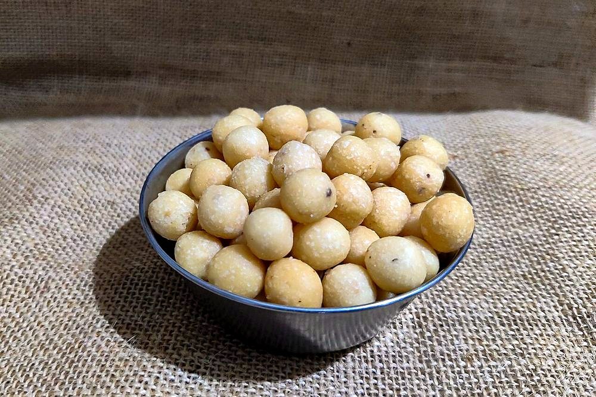

Contains: milk, sesame
Ingredients
Quantities for 30.
- 250g Rice Flour
- 3 tbsp, roasted and ground Urad Dal
- 30g Butter
- 3 tbsp, grated Coconut
- 1 tbsp Sesame
- 1/2 tsp Asafoetida
- as needed Water
- 500ml for deep frying Neutral Oil
- to taste Salt
Cookware
stovetop, kadhai
Checked against the ingredient list for ten allergens: milk, egg, fish, crustaceans, tree nuts, peanuts, sesame, mustard, soy and gluten. Brands vary, so read the label on anything new to you.
Before you start
- Seedai has a reputation for bursting in the oil. Two things cause it: air pockets in the balls and undissolved salt.
- Dissolve the salt in the water before it touches the flour, and roll each ball smooth with no cracks.
Method
- Sieve the flours together. Dissolve the salt and asafoetida in a little water and add that, not dry salt.Undissolved salt crystals are the classic cause of a seedai exploding.
- Rub in the butter, coconut and sesame, then bring together into a stiff dough with water.
- Roll small marble-sized balls, keeping each one completely smooth with no cracks.A crack is where the steam gets in. Roll them properly.
- Spread the balls on a cloth and air-dry 20 minutes.
- Fry a small batch on medium first as a test. If it holds, fry the rest until the bubbling stops.Test batch first, and stand back from the pan for the first minute.
- Drain and cool completely.
Storage
Keeps 2 weeks in an airtight tin at room temperature. The coconut is what limits it; beyond that it can turn.
Nutrition Good estimate
Low protein: 1 g a serving, 5% of the calories
| Per serving15 g | Per 100 g | |
|---|---|---|
| Calories | 69 kcal | 472 kcal |
| Protein | 0.9 g | 6 g |
| Carbohydrate | 7.8 g | 53 g |
| of which sugars | 0.1 g | 1 g |
| Fibre | 0.6 g | 4 g |
| Fat | 3.9 g | 26 g |
| of which saturated | 1.3 g | 8 g |
| of which unsaturated | 2.5 g | 16 g |
Ingredients given to taste count as zero, so the real figures run a little higher. Nearest database match used for asafoetida, urad dal. Estimated from raw ingredients using USDA FoodData Central.
More like this: Vegetarian Indian recipes · Gluten-free Indian recipes · No onion no garlic recipes · Tamil Nadu recipes
Times, yields, allergens and nutrition are guidance. Use your own judgement on doneness and on storing. More in About.